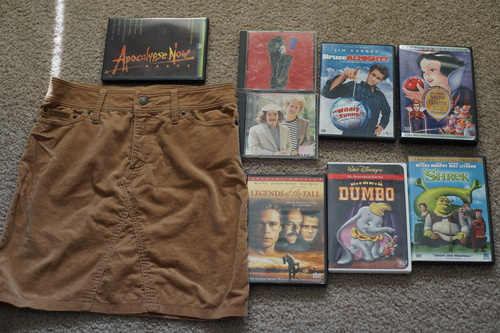

sweet peas are blooming!!
when the pods are out, my favorite activity is to break one open and see how far down the street i can throw the peas
is this brand like a knockoff of "versace jeans couture"? made in nippon, but obviously not designer quality. seems like a good skirt for this fall and winter though
Ryan doesn't know nasty??
i should have just checked my mom's shelf for this
fullscreen ugh
All the DVDs are Ryan's.
I've been waiting for my wrist to calm down before I start playing Nier again but it's been like this for over a week and I'm going to go find a new hobby that doesn't involve using my right wrist bye!!!!